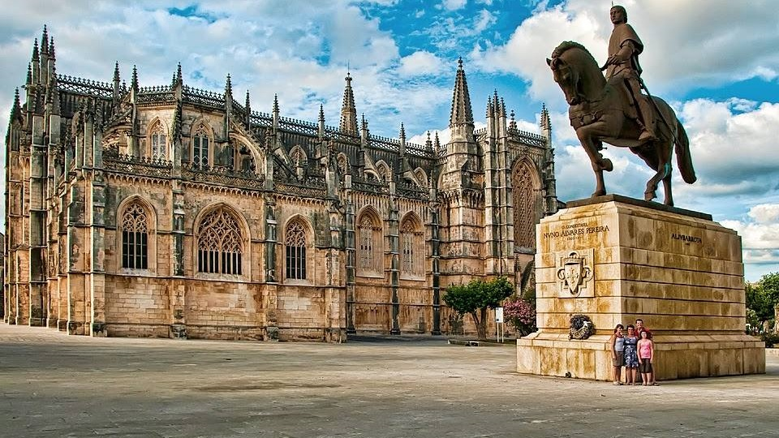
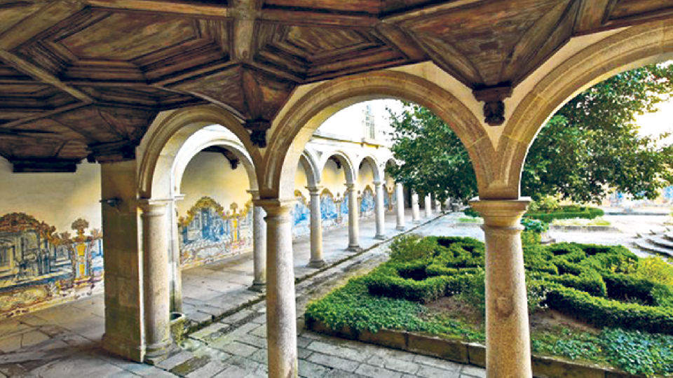

Mosteiro dos Jeronimos
Mosteiro dos Jeronimos
Mosteiro da Batalha
Mosteiro de Alcobaça
 Mosteiro de Braga
Mosteiro de Braga
Portugal surge em sexto, logo a seguir à Grécia. De entre as maravilhas portuguesas, são destacados principalmente a beleza das paisagens naturais, fazendo referência às ilhas dos Açores e Madeira, às paisagens serenas do Alentejo e à fantasia mágica que é Sintra. Uma referência às duas grandes cidades portuguesas também não podia faltar. Apesar de considerar que os centros históricos do Porto e Lisboa foram muito negligenciados, a costa ribeirinha foi designada como uma das grandes atracções das duas cidades.
São milhares de fortificações que foram erguidas na Idade Média e estão espalhadas por todo Velho Continente. Após muito trabalho e muitos castelos percorridos, elaboramos uma lista com os dez castelos mais bonitos de Portugal.
Portugal surge em sexto, logo a seguir à Grécia. De entre as maravilhas portuguesas, são destacados principalmente a beleza das paisagens naturais, fazendo referência às ilhas dos Açores e Madeira, às paisagens serenas do Alentejo e à fantasia mágica que é Sintra. Uma referência às duas grandes cidades portuguesas também não podia faltar. Apesar de considerar que os centros históricos do Porto e Lisboa foram muito negligenciados, a costa ribeirinha foi designada como uma das grandes atracções das duas cidades.
Top 10 países mais bonitos do Mundo:
Mosteiro dos JeronimosMosteiro de BragaMosteiro de Óbidos
Copyright © 2025 - Formador Kundan e Formando Álvaro Faria - Todos os Direitos Reservados